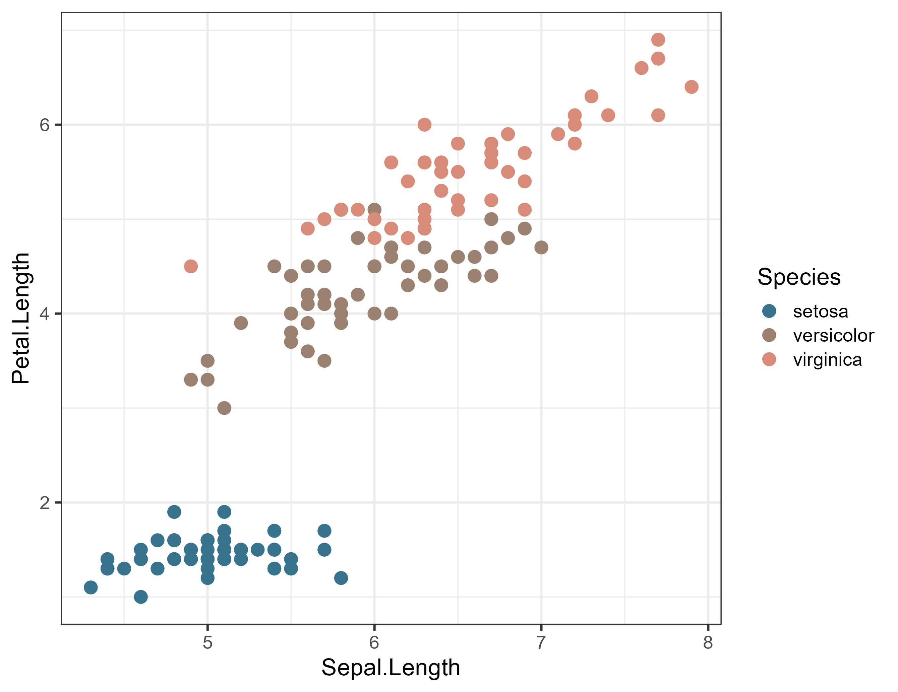

Overview
The ButterflyColors package contains color palette for plotting in R based on butterfly species. For species with sexual dimorphisms, we used male colors.
Installation
You can install the development version of ButterflyColors from GitHub with:
# install.packages("devtools")
devtools::install_github("junqueiragaabi/ButterflyColors")
library(ButterflyColors)The color scales
Butterfly palettes were extected from photographs using Adobe Color. We defined the five dominant colors in each butterfly species. All photographs used were taken by Sofia Schirmer from biological collections of Brazilian universities.
Usage
The color palettes per species are organized in a list called butterfly_species:
library(ButterflyColors)
names(butterfly_species)## [1] "philaethria_dido" "anteos_menippe" "fountainea_ryphea"
## [4] "lycorea_hallia" "morpho_helenor" "archaeoprepona_demophon_thalpius"
## [7] "brassolis_sophorae" "historis_acheronta" "stalachtis_phlegia_susanna"
## [10] "battus_polydamas" "anteos_clorinde" "chorinea_licursis"
## [13] "danaus_eresimus" "smyrna_blomfidiana" "astraptes_fulgerator"
## [16] "hamadryas_feronia" "pseudolycaena_marsyas" "catagramma_pygas"
## [19] "heliconius_sara_apseudes" "synargis_calyce" "hamadryas_feronia"
## [22] "heliconius_erato_phyllis" "hylephila_phyleus" "danaus_erippus"
## [25] "danaus_gilippus" "junonia_evarete" "hemiargus_hanno"
## [28] "dynamine_postverta" "parides_zacynthus_polymetus" "marpesia_petreus"and the function butterfly_palettes returns a vector with the color palette (hex color codes) of a butterfly.
butterfly_palettes(specie = "parides_zacynthus_polymetus")## [1] "#37738D" "#9B8170" "#D98B79" "#BF6860" "#292325"A few examples…
library(ggplot2)
ggplot(iris, aes(x = Sepal.Length, y = Petal.Length, colour = Species)) +
geom_point(size = 3) +
scale_colour_manual(values = butterfly_palettes("parides_zacynthus_polymetus"))
Contribute
Can’t find the species you want?
If you would like to contribute to this package, please contact Gabriela Junqueira or Sofia Schirmer on Twitter or submit a pull request
Credits
The structure of this package was inspired by the feathers and fishualize packages.